Menu barbok'you

Les Emotes
Applaudir
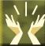
Localisation : -2/-6
Il faut etre 9 minimum pour cette emote (10 conseillé avec celui qui ouvre la grotte pour les autres), il faut qu'une personne ouvre la porte de la grotte en 1er, si vous etes que 9 il faudra qu'elle cours pour rentrer dedans une fois ouverte
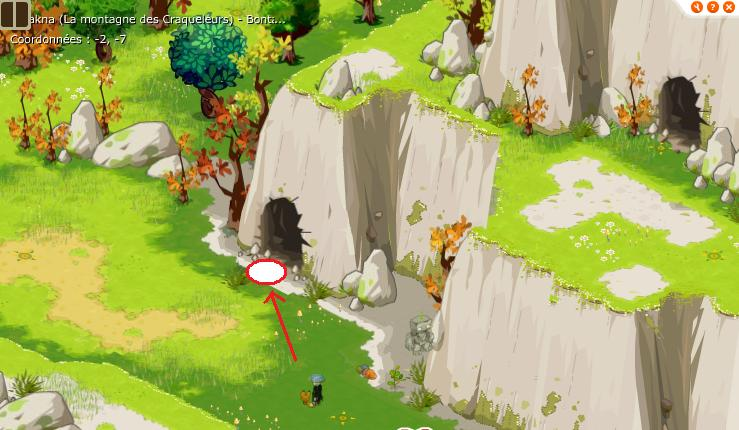
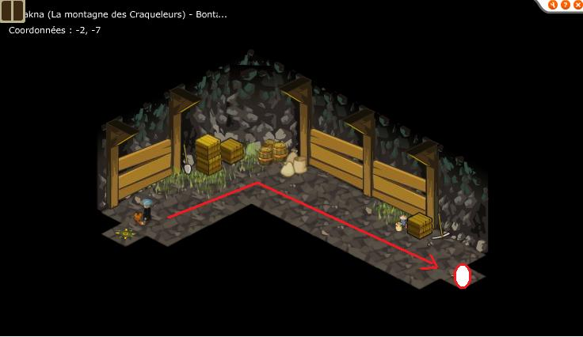
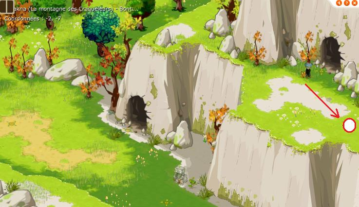
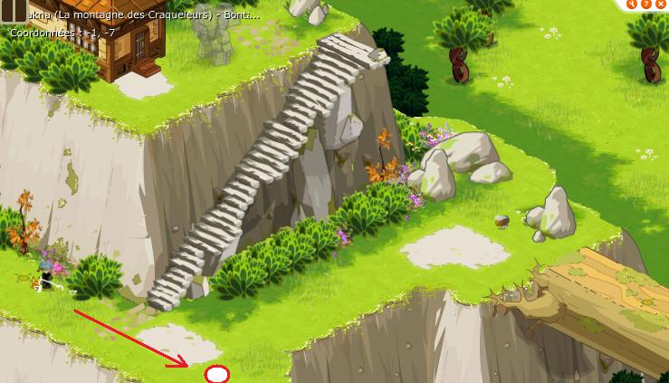
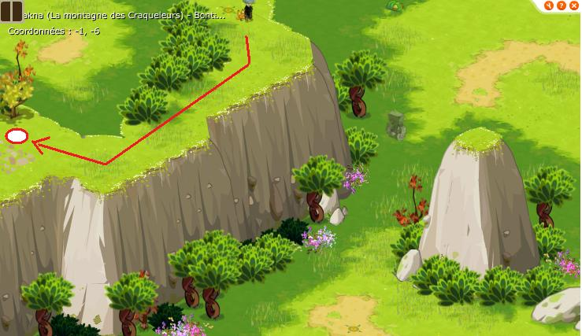
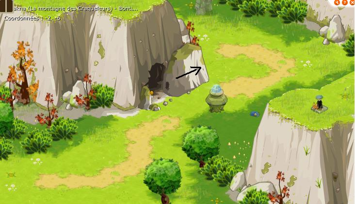
Une fois dedans placez vous en croix sur les dalles de la premiére salle puis actionnez le levier pour aller dans la 2éme salle.
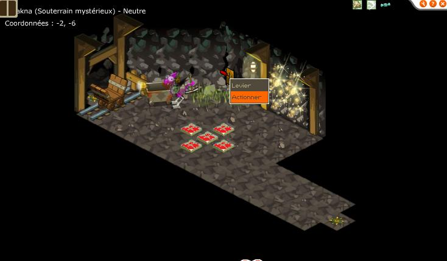
Faites une croix plus grande en vous placant sur les dalles et actionnez le levier.
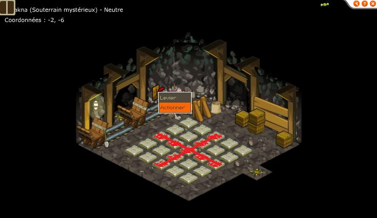
Cliquez sur le socle et à vous l'emote APPLAUDIR !
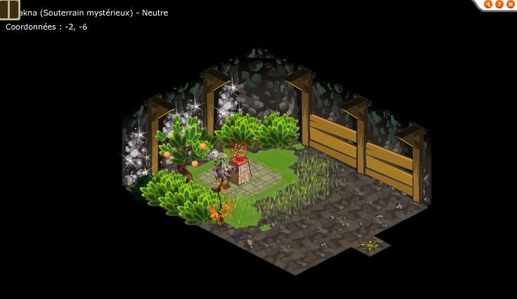
Montrer sa Peur
Localisation : 19/24
Vous pouvez obtenir cette emote tout seul, je vous laisse chercher un peu la map dans sufokia. Placez vous ensuite au bord pour que le sol sorte de la mer, puis avancez encore au bord pour le deuxième bloc.
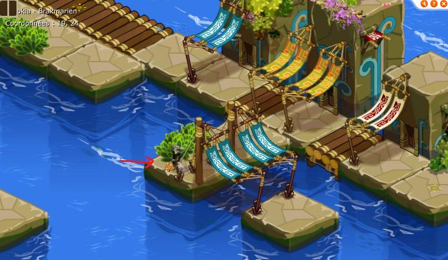
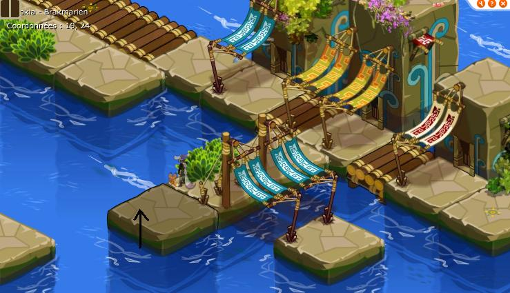
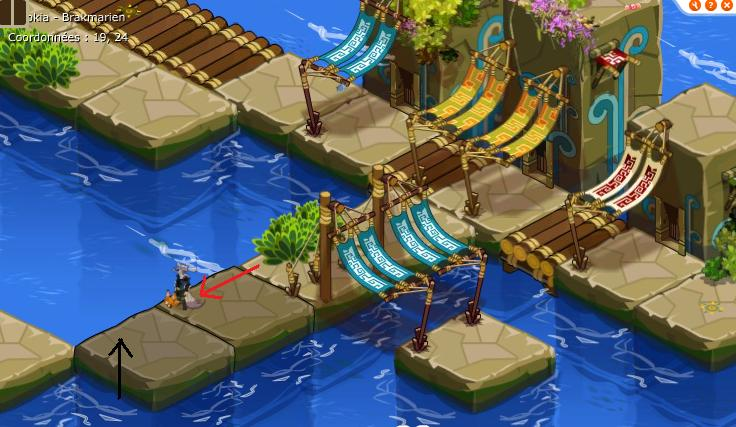
Une fois passé, rentrez dans la maison, cliquez sur le socle et à vous l'emote MONTRER SA PEUR
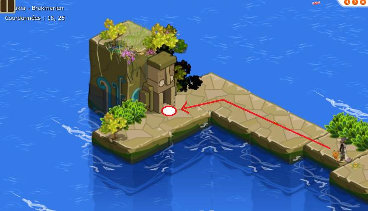
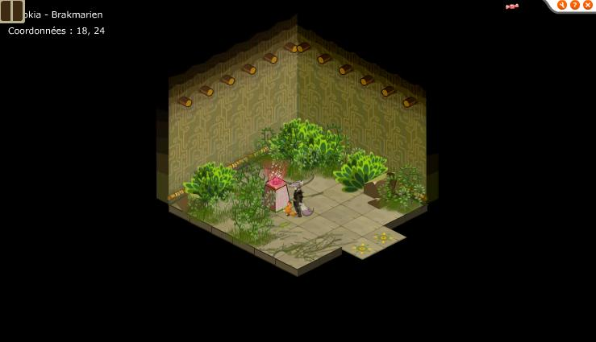
Saluer
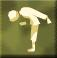
Localisation : 13/21
Cette emote s'obtient dans le Donjon Forgeron, il faut donc une team de 3-4 personnes de level 40-60. Munissez vous d'une clé pour faire le donjon.
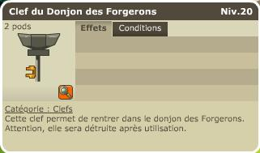
Aprés pas mal de salle, n'oubliez pas d'aller toucher le socle avant de lancer le combat pour avoir l'emote SALUER
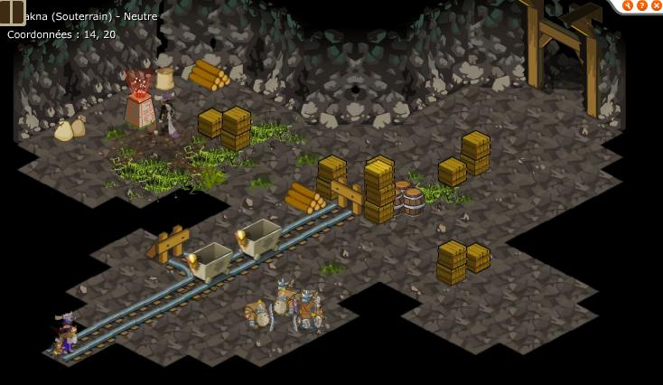
Envoyer un Bisous
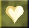
Localisation : 1/0
Vous pouvez obtenir cette emote tout seul. Parlez à Don Ruan, il vous demande de lui rapporter une pince de crabe.
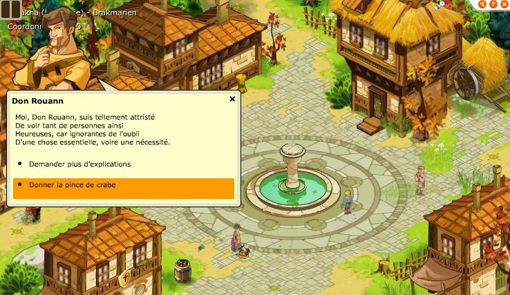
Il vous pose ensuite des questions sur l'amour :
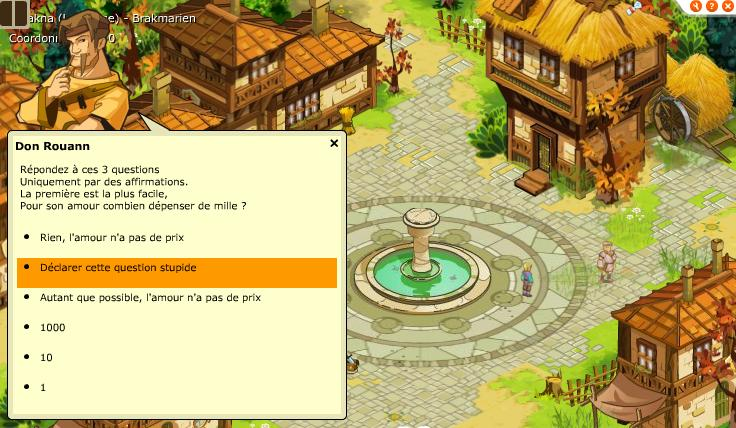
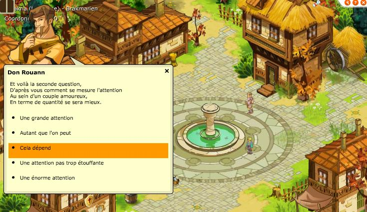
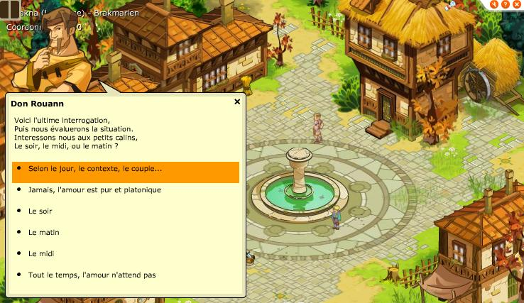
Il faudra revenir ensuite entre 00h00 et 00h59 pour obtenir cette emote (faire /time pour avoir l'heure de dofus)
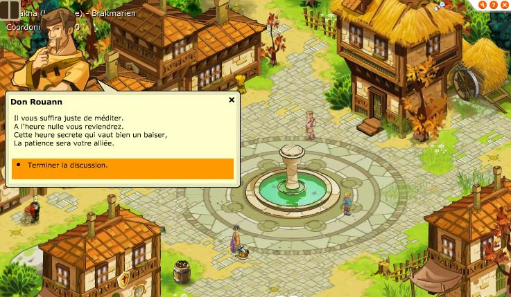
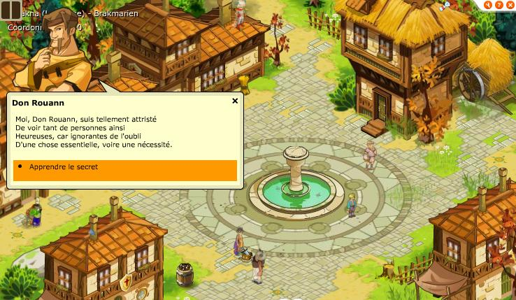
Lacher les Gaz
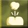
Localisation : vers -3/13
Vous pouvez obtenir cette emote tout seul. Il faut affrontez des crocodailles qui permettent de dropper un parchemin "vent de panique" qui vous apprendra l'emote.
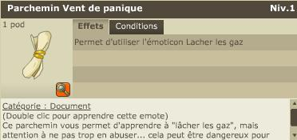
Pierre / Feuille / Ciseau
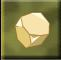
Localisation : 2/-1
Vous pouvez obtenir cette emote tout seul. Tout d'abord allez à la bibliothéque et achetez le livre sur le language des ecureuils.
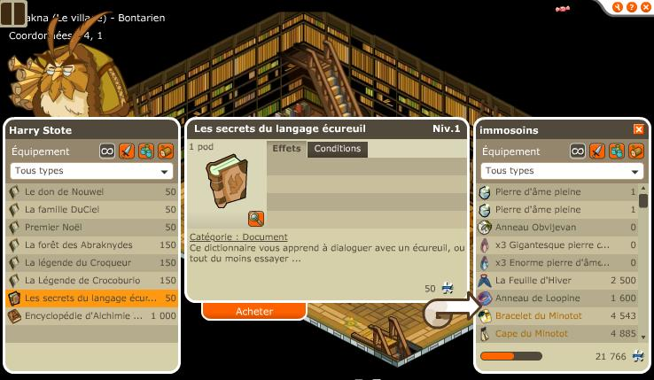
Parlez ensuite à l'ecureuil clairvoyant en 5/21, traduisez ce qu'il dit grace au livre et apportez lui une noisette, vous etes alors clairvoyant :
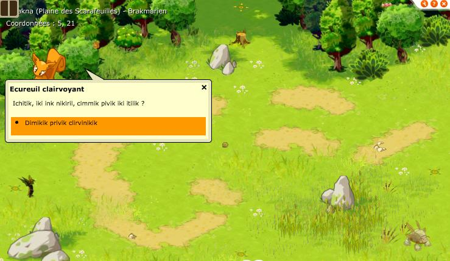
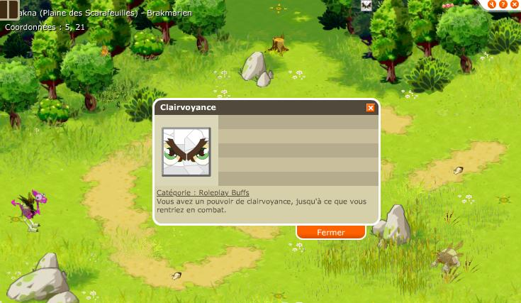
Allez ensuite à l'etage de la taverne en 2/-1 sans faire de combat pour ne pas perdre votre faculté de clairvoyance, battez 3 fois Grismine à pierre/feuille/ciseau et vous aurez votre emote.
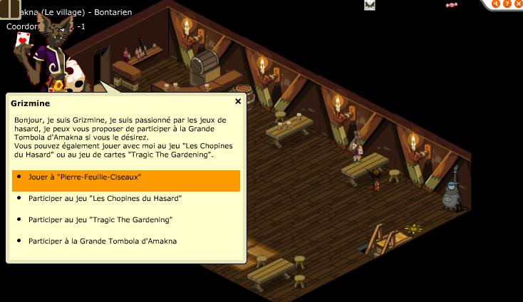
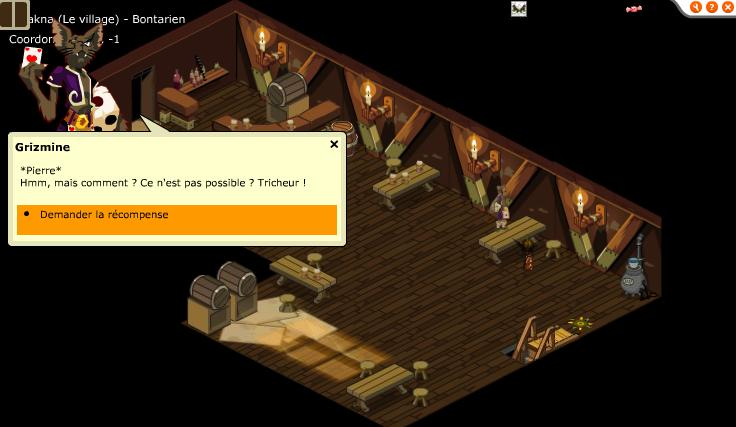
Dofus est un MMORPG édité par Ankama." Barbok " est un site non-officiel sans aucun lien avec Ankama.
Toutes les illustrations sont la propriété d'Ankama Studio et de Dofus. Le contenu de ce site a été rédigé initialement par Immortal, il ne s'agit que d'une remise en ligne effectuée par Eternal Games.